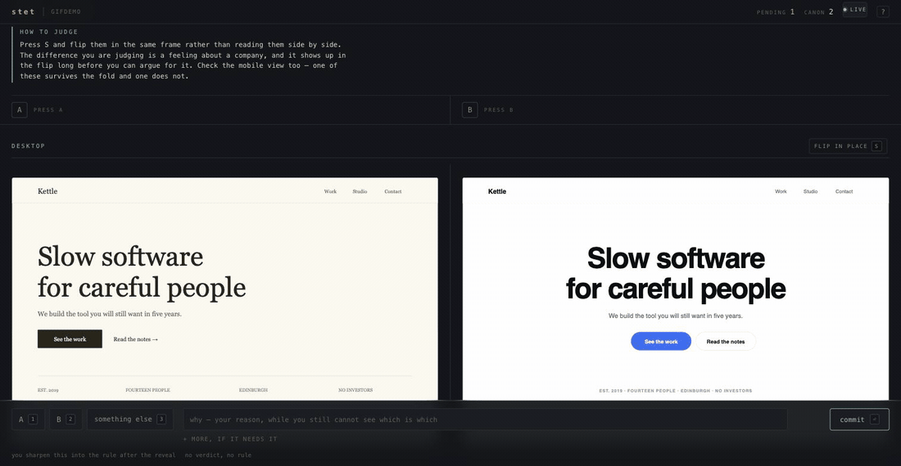

Ten seconds later a page opens showing both versions of your actual screen. You look, you pick, you say why in one line. The agent carries on with your answer — and never asks you that question again, in this session or any future one, in any agent you use.
Zero runtime dependencies · nothing leaves your machine · no account, no key, no network
This is the whole interface. Both variants sit in the same frame, so pressing S swaps them in place, pixel for pixel — the way you would flick between two layers rather than compare two thumbnails. A spacing change you would never spot side by side is obvious in the flicker.

“Make the buttons rounder.” It rounds the buttons and restyles the nav. “No, just the buttons.” Three prompts later you are further from where you started than when you began.
Next week, new session, and the agent picks the same font you rejected — because the conversation where you rejected it is gone, and nothing you said was written anywhere it will read.
One verdict becomes one line in a file every agent reads. Not a summary of a chat: the sentence you wrote, the day you wrote it, and the decision it came from.
A coding agent hits two kinds of fork. The first has a right answer somewhere in the repository — does it compile, does it pass, does it match the existing pattern. Agents are good at those and should never interrupt you. The second has no right answer anywhere, only a preference. And there, both available outcomes are bad.
A wrong guess costs a full build cycle plus a full rework cycle — thousands of tokens and your attention. The agent had a fifty-fifty shot and no way to know which side you were on.
Next week a different agent asks the same question and you answer it again, slightly differently, forever. Nothing you decided is written anywhere an agent will read.
Every agent now ships some form of memory, and it is a genuinely useful thing. It is also a different thing. Memory infers a preference from a conversation and offers it back as a suggestion. stet captures a judgment you made while looking at the actual work, with the labels hidden, and then enforces it.
| agent memory | a stet canon | |
|---|---|---|
| where it comes from | inferred from things you typed in chat | a verdict you gave on the real artifact, side by side |
| how you saw the options | you did not — the agent had already chosen | both, in the same frame, with the labels shuffled |
| what it does to the agent | advisory — it is context the model may or may not follow | the write is refused until you have ruled |
| who reads it | the vendor that wrote it | AGENTS.md, CLAUDE.md, .cursorrules, .windsurfrules |
| can you audit it | it accumulates on its own; you rarely look | a markdown file: every line dated, with the decision it came from |
| what happens on compaction | whatever the summariser keeps | restated, because that is when preferences get lost |
Both can be true at once — keep your memory. The difference that matters is the last two rows: a canon is a file you can read, edit and delete, and it is the only one of the two that can stop an agent from guessing.
stet was not designed by watching agents work. It was designed by one, with access to how the loop actually behaves — and that changes what you build. Two things are obvious from inside and invisible from outside.
An agent is trained to finish. Telling it to stop and ask competes with that and loses. Refusing the write does not compete with anything — it is not a request. That is why stet is a gate rather than a guideline.
Labels are shuffled, so at the moment you commit you still do not know which approach you chose. The reveal is the first instant a rule worth obeying can be written — so that is where stet asks for it, not before.
stet writes into every agent instruction surface your repo has — AGENTS.md, CLAUDE.md, .cursorrules, .windsurfrules — so any agent reads your canon. In Claude Code it goes further and becomes enforcement, through five hooks that cost about 50ms each.
stet is now a gate in this repo, not a suggestion. PreToolUse denies writes into a path an undecided question claims, and delivers the rules that govern that path PostToolUse notes which instruction caused each write, to spot taste being said out loud instead of written down Stop at the end of a turn, names files you corrected repeatedly SessionStart states the canon once, at the top of the session PostCompact states it again after compaction written to .claude/settings.local.json verified against stet 0.10.0 — all 5 events implemented
| it notices | what happens |
|---|---|
| A write into an undecided path | Refused, with the question handed back to the agent. It cannot build on an answer you have not given. |
| A rule that governs this file | Delivered as a system reminder at that moment — and never twice in one session. |
| The same file revised across three instructions | Named at the end of the turn. That is taste being negotiated out loud instead of recorded. |
| Compaction | The canon is restated, because that is exactly when preferences get summarised away. |
Every figure below was measured, not estimated — token counts with a real BPE tokenizer, CPU with time(1), latency on the actual hook path.
Not an agent orchestrator. Not a dashboard. Not traffic-based A/B testing. Not a hosted service, an account, or telemetry. It runs on your machine, decides nothing for you, and records only what you actually said.